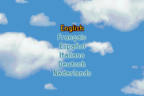
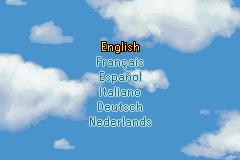

Chicken Little (USA, Europe) (En,Fr,De,Es,It,Nl)
EEPROM 4K
Cartridge Identity
- Game Code
BCHE(FamilyBCH)- Header Title
CLITTLEE- Maker / Revision
4Q/ rev0- ROM Size
- 8.0 MiB (8,388,608 B)
- Save Media
EEPROM 4K- SHA-256
1c38dba4b01694b45fdf1ceadab7d2598a28396b73728166ff39d325d25482bf- Engine / SDK Group
comm-015(23 families)
Screenshots


Observed Battery Save Layout
- Fill Byte & Active Size
0x00fill · 148–148 / 512 B active (entropy 0.63 bits/B)- Active Offset Ranges
0x0–0x7,0xC–0x27,0x2B–0x2F,0xA0–0xA2,0xA8–0xC7,0xCB–0xCF,0x140–0x142,0x148–0x167, +3 more (11 total)- ASCII Magic / Headers
4M2A- Observed Variable Regions
- 0 bytes across 0 spans: None
- Candidate Checksum/Counter Spans
- None
ROM Assets, Compression & Audio
- BIOS Compression
- LZ77 (
0x10): 0 streams · RLE (0x30): 0 streams - ROM Pointer Tables
- 72 tables (0 pointing to validated compressed streams)
- SDK Backup Tags
EEPROM_V124
Hardware MMIO Subsystems
ppu_display0x8045e34
Regional Variants & Revisions (Family BCH)
- Chicken Little (Japan) (
BCHJ, 8 MiB)